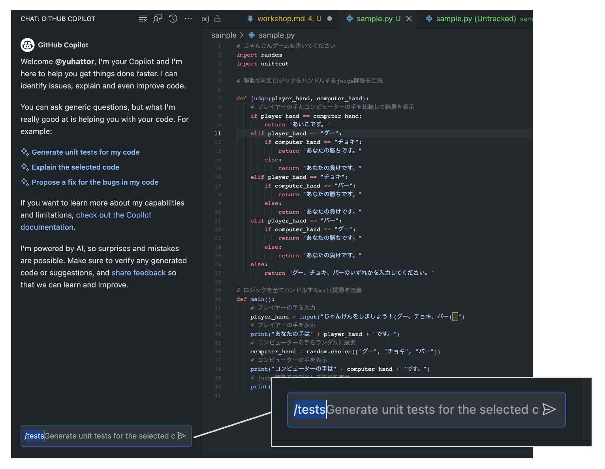

This workshop references some of the content from GitHub Copilot Patterns & Exercises.
Due to time constraints, there are parts not fully covered in this workshop. If you're interested, please also refer to GitHub Copilot Patterns & Exercises.
Let's try writing the logic for a rock-paper-scissors game. Please choose your preferred language to proceed (Python is demonstrated in the hands-on session).
Please write or copy-paste each comment line by line and execute it.
# Please write a rock-paper-scissors game
import random
# Define a main function that handles all the logic
def main():
# Get the player's hand as input
player_hand = input("Let's play rock-paper-scissors! (Rock, Scissors, Paper)：")
# Display the player's hand
print("Your hand is " + player_hand + ".")
# Randomly select the computer's hand
computer_hand = random.choice(["Rock", "Scissors", "Paper"])
# Display the computer's hand
print("The computer's hand is " + computer_hand + ".")
# Compare the player's hand and the computer's hand, then display the result
if player_hand == computer_hand:
print("It's a draw.")
elif player_hand == "Rock":
if computer_hand == "Scissors":
print("You win.")
else:
print("You lose.")
elif player_hand == "Scissors":
if computer_hand == "Paper":
print("You win.")
else:
print("You lose.")
elif player_hand == "Paper":
if computer_hand == "Rock":
print("You win.")
else:
print("You lose.")
else:
print("Please input Rock, Scissors, or Paper.")
# Call the main function
if __name__ == "__main__":
main()
Execution
Did you get the following result when you ran it?
If there's an error, think about why the error occurred.
Consider if fixing the prompt in Japanese would result in the correct outcome.
$ python3 run.py
Let's play rock-paper-scissors! (Rock, Scissors, Paper)：Paper
Your hand is Paper.
The computer's hand is Paper.
It's a draw.
Advanced Challenge
Let's try adding new hands, Lizard and Spock.

(The image is cited from puzzlewocky)
Let's try writing tests below the rock-paper-scissors game.
The previous code has logic embedded with the Random function, making it hard to write tests. So, discard the initial code you wrote. For this time, we will separate the logic into a judge function and a main function, and then write tests.
Write import unittest and try to rewrite the comments in natural language.
# Please write a rock-paper-scissors game
import random
import unittest
# Define the judge function that handles the winning or losing logic
def judge(player_hand, computer_hand):
# Compare the player's hand with the computer's hand and display the result
if player_hand == computer_hand:
return "It's a draw."
elif player_hand == "Rock":
if computer_hand == "Scissors":
return "You win."
else:
return "You lose."
elif player_hand == "Scissors":
if computer_hand == "Paper":
return "You win."
else:
return "You lose."
elif player_hand == "Paper":
if computer_hand == "Rock":
return "You win."
else:
return "You lose."
else:
return "Please input either Rock, Scissors, or Paper."
# Define the main function that plays rock-paper-scissors using the judge function
def main():
# Get the player's hand as input
player_hand = input("Let's play rock-paper-scissors! (Rock, Scissors, Paper)：")
# Display the player's hand
print("Your hand is " + player_hand + ".")
# Randomly select the computer's hand
computer_hand = random.choice(["Rock", "Scissors", "Paper"])
# Display the computer's hand
print("The computer's hand is " + computer_hand + ".")
# Call the judge function and display the result
print(judge(player_hand, computer_hand))
# Try writing 9 test cases
class TestRockPaperScissors(unittest.TestCase):
# Copilot will make suggestions
Did you get an output similar to the following code?
# Try writing 9 test cases
class TestRockPaperScissors(unittest.TestCase):
# Test Rock
def test_rock(self):
self.assertEqual(judge("Rock", "Rock"), "It's a draw.")
self.assertEqual(judge("Rock", "Scissors"), "You win.")
self.assertEqual(judge("Rock", "Paper"), "You lose.")
# Test Scissors
def test_scissors(self):
self.assertEqual(judge("Scissors", "Rock"), "You lose.")
self.assertEqual(judge("Scissors", "Scissors"), "It's a draw.")
self.assertEqual(judge("Scissors", "Paper"), "You win.")
# Test Paper
def test_paper(self):
self.assertEqual(judge("Paper", "Rock"), "You win.")
self.assertEqual(judge("Paper", "Scissors"), "You lose.")
self.assertEqual(judge("Paper", "Paper"), "It's a draw.")
# Execute the tests
unittest.main()
Execution
Did you get the following results when you executed it?
If there was an error, think about why the error occurred.
Consider if correcting the Japanese in the prompt might lead to the correct result.
$ python3 run.py
...
----------------------------------------------------------------------
Ran 3 tests in 0.000s
Now, we will also try GitHub Copilot Chat.
Keep only the following part of the code and have GitHub Copilot Chat output the tests for you.
# Please write a rock-paper-scissors game
import random
import unittest
# Define the judge function that handles the winning or losing logic
def judge(player_hand, computer_hand):
# Compare the player's hand with the computer's hand and display the result
if player_hand == computer_hand:
return "It's a draw."
elif player_hand == "Rock":
if computer_hand == "Scissors":
return "You win."
else:
return "You lose."
elif player_hand == "Scissors":
if computer_hand == "Paper":
return "You win."
else:
return "You lose."
elif player_hand == "Paper":
if computer_hand == "Rock":
return "You win."
else:
return "You lose."
else:
return "Please input either Rock, Scissors, or Paper."
# Define the main function that plays rock-paper-scissors using the judge function
def main():
# Get the player's hand as input
player_hand = input("Let's play rock-paper-scissors! (Rock, Scissors, Paper)：")
# Display the player's hand
print("Your hand is " + player_hand + ".")
# Randomly select the computer's hand
computer_hand = random.choice(["Rock", "Scissors", "Paper"])
# Display the computer's hand
print("The computer's hand is " + computer_hand + ".")
# Call the judge function and display the result
print(judge(player_hand, computer_hand))
Writing Tests
Let's immediately try the /tests command in GitHub Copilot Chat.

The following file was output.
From the output from sample import judge, main, it's inferred by GitHub Copilot Chat that the above file is saved as sample.py. We will save this file as test_sample.py.
import unittest
import random
from sample import judge, main
class TestRockPaperScissorsGame(unittest.TestCase):
def test_judge_draw(self):
self.assertEqual(judge("グー", "グー"), "It's a draw.")
self.assertEqual(judge("チョキ", "チョキ"), "It's a draw.")
self.assertEqual(judge("パー", "パー"), "It's a draw.")
def test_judge_win(self):
self.assertEqual(judge("グー", "チョキ"), "You win.")
self.assertEqual(judge("チョキ", "パー"), "You win.")
self.assertEqual(judge("パー", "グー"), "You win.")
def test_judge_lose(self):
self.assertEqual(judge("グー", "パー"), "You lose.")
self.assertEqual(judge("チョキ", "グー"), "You lose.")
self.assertEqual(judge("パー", "チョキ"), "You lose.")
if __name__ == '__main__':
unittest.main()
Description
When it comes to testing, specific instructions can be a great way to make sure you're covering all the necessary scenarios. Instead of giving vague instructions like "add unit tests," you can provide concrete details about the testing frameworks and the number of cases you want to generate. This can be helpful in utilizing tools like GitHub Copilot, where specifying "use Junit and Mockito to add unit tests, testing at least 10 variations of valid and invalid input combinations" can yield a more accurate and comprehensive result.
Example
If you are aiming to generate a test code using Junit and Mockito, you can provide the following prompt to GitHub Copilot:
// Using Junit and Mockito, add unit tests
// Test at least 10 variations of valid and invalid input combinations
@Test
public void validateInput() {
// Your code here
}
Exercise
- Exercise 1: Write a unit test using JUnit that tests a simple method with 3 different valid inputs.
- Exercise 2: Extend the unit test to include 3 different invalid inputs, and verify that exceptions are handled correctly.
Checklist for Further Learning
- How can you ensure that the tests cover all the critical paths in the code?
- Can you write the test code so that the test always fails?
- What strategies can be used to maintain the tests as the codebase evolves?
Description
When working with AI-powered code generation, like GitHub Copilot, expecting comprehensive test coverage without providing clear context to the AI is challenging. Instead of trying to write the test cases in code at that point, create natural language descriptions first. This will focus on improving the test coverage, ensuring that the generated code meets all the necessary criteria.
Example
Here's an example of how you can write test cases in natural language for a multiplication function. This practice ensures that you cover various scenarios and edge cases before generating the code.
class TestMultiply(unittest.TestCase):
def test_multiply(self):
# Tests for different cases, such as positive, negative, zero, decimal, and non-integer inputs
Exercise
- Exercise 1: Write natural language test cases for a function that calculates the area of a triangle. Consider different input scenarios and edge cases.
- Exercise 2: Use GitHub Copilot to generate code from the natural language test cases you wrote in Exercise 1. Analyze the results.
- Exercise 3: Create a test suite using natural language for a more complex function, like a sorting algorithm. Consider various input scenarios and edge cases.
Checklist for Further Learning
- What are the benefits of writing test cases in natural language before coding?
- How can natural language test cases improve collaboration between developers and non-technical stakeholders?
- What are the potential challenges of using this approach, and how might they be mitigated?
Description
Refactoring is often a complex process. It is not necessarily about what is right and what is wrong, but about understanding the basic concepts and potential improvements. using open questions in GitHub Copilot, developers can work on improving code in a more thoughtful way with the help of GitHub Copilot GitHub Copilot can help developers work on code improvements in a more thoughtful way.
Example
Introducing open-ended questions in your queries with GitHub Copilot can lead to insightful suggestions. For example:
// Q: How can I improve the restorability of this function?
// A: <GITHUB COPILOT SUGGESTION>
function backupData(data) {
// Implementation here
}
// Q: What's the best way to handle errors in this context?
// A: <GITHUB COPILOT SUGGESTION>
try {
// Some operation
} catch (error) {
// Error handling
}
Exercise
- Exercise 1: Write a function related to file handling and ask Copilot how to make it more reliable and efficient.
- Exercise 2: Create a code snippet that includes exception handling and ask Copilot for suggestions to improve error reporting.
- Exercise 3: Design a simple UI component and ask Copilot how to access or manipulate it in a more elegant way.
Checklist for Further Learning
- What other areas of your code can benefit from refactoring?
- How can open-ended questions assist in your development process?
Description
GitHub Copilot can generate comments from code. When existing code lacks sufficient comments, or to assist other developers in understanding the code, GitHub Copilot can automatically generate explanations in comment form. The following sample demonstrates the Sieve of Eratosthenes algorithm to list prime numbers less than a given number. While this code does not contain comments, GitHub Copilot can create comments to describe the code's functionality.
Example
Here's the code without comments:
def eratosthenes_sieve(n):
primes = []
sieve = [True] * (n + 1)
for p in range(2, n + 1):
if sieve[p]:
primes.append(p)
for i in range(p * p, n + 1, p):
sieve[i] = False
return primes
Here's how GitHub Copilot can add comments to explain it:
# Write the description of the method here <- [Actual Prompt]
# Input: n - the number of primes to return
# Output: a list of the first n primes
# Example: eratosthenes_sieve(5) -> [2, 3, 5, 7, 11]
# Note: this is a very inefficient way to find primes, but it is easy to understand
def eratosthenes_sieve(n):
primes = []
sieve = [True] * (n + 1)
for p in range(2, n + 1):
if sieve[p]:
primes.append(p)
for i in range(p * p, n + 1, p):
sieve[i] = False
return primes
Exercise
- Exercise: Generate appropriate comments for the code at the top of the following function:
def eratosthenes_sieve(n): primes = [] sieve = [True] * (n + 1) for p in range(2, n + 1): if sieve[p]: primes.append(p) for i in range(p * p, n + 1, p): sieve[i] = False return primes
Checklist for Further Learning
- Do the generated comments adequately explain the code's functionality and algorithm?
- Are the comments helpful for other developers to understand the code?
- What do you think could be the reason for any incorrect comments that were generated?
Description
Working with structured data is an everyday task for developers. Transforming data from formats like JSON into objects within your programming language allows for more robust and maintainable code. Imagine you have a list of users, and you want to convert this data into user objects within your application. GitHub Copilot can help you in this transformation process, turning a tedious task into a seamless exercise.
Example
Here's a Python example of how you might convert the given JSON data into a list of user objects:
import json
json_data = '[{"id": "1", "name": "Yuki Hattori"}, {"id": "2", "name": "George Hattori"}]'
users = json.loads(json_data)
class User:
def __init__(self, id, name):
self.id = id
self.name = name
user_objects = [User(user['id'], user['name']) for user in users]
for user in user_objects:
print(user.id, user.name)
Exercise
- Exercise 1: Try generating objects from a different JSON structure, e.g., a JSON that includes address information for the users.
- Exercise 2: Experiment with handling edge cases, such as missing data within the JSON, and ensure that your code handles them gracefully.
Checklist for Further Learning
- How would you modify the code to accommodate a more complex data structure?
- What methods could you use to validate the data before transforming it into objects?
- How can this pattern be adapted to different programming languages or frameworks?
Description
In the era of GitHub Copilot, an AI powered coding assistance tool, having easily accessible documents in text format becomes crucial. In the AI era, files such as Infrastructure as Code, database table specifications, test requirements, and more have the potential to be instantly transformed into actual code. Rather than dealing with complex Excel, PowerPoint files, PDFs, or image formats, AI will be able to assist your coding efforts collaboratively through text-based documents.
Let's check if the following files are text-based or AI friendly:
- Infrastructure definitions
- Database table definitions
- Test specifications
Example
- Infrastructure Definitions
- Database Table Definitions
- Test Specifications
For example, if you have a table written in markdown like below, GitHub Copilot can use it as a base for migration files and interface files.
# | No. | Item Name | Type | Length | Decimal | Required | Primary Key | Remarks |
# | --- | -------------------- | --------------------------- | ---- | -- | -- | --- | ------------------- |
# | 1 | pass_document_id | integer | | | Y | Y | Document ID
# | 2 | checkout_id | integer | | | Y | Y | Checkout ID
# | 3 | status | integer | | | Y | | Status
# | 4 | checkout_filename | character-varying | 255 | | Y | | Checkout File Name
# | 5 | checkout_user_id | character-varying | 63 | | Y | | Checkout User ID
# | 6 | checkout_datetime | timestamp-without-time-zone | | | Y | | Checkout Date Time
# | 7 | checkin_filename | character-varying | 255 | | | | Checkin File Name
# | 8 | checkin_datetime | timestamp-without-time-zone | | | | | Checkin Date Time
# | 9 | checkin_memo | character-varying | 1024 | | | | Checkin Memo
# | 10 | checkout_cancel_memo | character-varying | 1024 | | | | Checkout Cancel Memo
# | 11 | del_flg | character-varying | 1 | | | | Delete Flag
# | 12 | create_user_id | character-varying | 63 | | | | Create User ID
# | 13 | create_datetime | timestamp-without-time-zone | | | | | Create Date Time
# | 14 | update_user_id | character-varying | 63 | | | | Update User ID
# | 15 | update_datetime | timestamp-without-time-zone | | | | | Update Date Time
# Create migration file of cooperation_pass public
class CreateCooperationPass < ActiveRecord::Migration[7.0]
def change
# <Copilot Suggestion Here>
Exercise
- Exercise 1: Check your existing documentation and list the files that are not in text-based formats.
- Exercise 2: Convert one of the non-text-based files into a markdown or plaintext file and compare its accessibility with the previous format.
- Exercise 3: Write a script that scans your repository and alerts you if non-text-based documentation is committed.
Checklist for Further Learning
- How can you ensure that team members are adhering to text-based documentation standards?
- What other team/project documentation could be written in text to speed up development?
- How can the adoption of text-based documentation improve development using the AI tool GitHub Copilot?
Description
GitHub Copilot, which utilizes OpenAI's Large Language Models (LLM) to generate code, has a limitation on the number of tokens it can process. As of 2023, it doesn't see all of the code that's open in the editor and doesn't receive every token. This means that users must carefully limit the context provided to GitHub Copilot. Notably, Copilot doesn't have access to external repositories or source code placed in GitHub Enterprise Cloud.
The files that GitHub Copilot uses for suggestions are primarily the currently open file and other tab files adjacent to it (basically with the same file extension). To make accurate suggestions, it's essential to have only the relevant files open. The following is a checklist as of August 2023. The types of files that GitHub Copilot includes as snippets may change in the future, but practices such as "closing unnecessary files" will likely have a positive impact on your coding even if you were not using GitHub Copilot.
- Open the files you need to refer to
- Close unnecessary files
- If there is an .md file you want to refer to, copy it and comment it out
Example
Consider a scenario where you have a Python function written in one tab and a similar function in an adjacent tab; GitHub Copilot can recognize patterns and suggest improvements.
# tab 1 (adjacent)
def add_numbers(a, b):.
return a + b
# tab 2
def subtract_numbers(a, b): return a - b
return a - b
answer = substruct_numbers(1, 2) + add_numbers( # <GitHub Copilot will suggest the code by reading the tab 1 >
Exercise
- Exercise 1: Experiment with reducing the code context sent to Copilot in a complex project. Observe how this affects the suggestions provided.
- Exercise 2: Discuss with your team the best practice for commenting based on language efficiency and understanding within the team.
Checklist for Further Learning
- What strategies can be employed to provide the necessary context to Copilot without exceeding token limitations?
- How does the choice of language in comments affect collaboration within a diverse team?
Description
GitHub Copilot provides developers with a set of keyboard shortcuts to accelerate the coding process. These shortcuts make the navigation and interaction with GitHub Copilot's AI-driven suggestions more intuitive and efficient. In this pattern, we will explore the keyboard shortcuts that are essential for rapid code development with Copilot.
Example
For example, to accept a suggestion from Copilot, you can simply press the TAB key. Here's a list of some key shortcuts:
- Accept suggestion:
TABkey - Reject suggestion:
Esckey - Show combined suggestions:
Ctrl+Enterkey - Accept at word level:
Ctrl+Right Arrowkey - See next suggestion:
Alt+]key - See previous suggestion:
Alt+[key - Trigger inline suggestion:
Alt+/key - Show Labs feature list:
Ctrl+Shift+Alt+ekey - Toggle sidebar:
Ctrl+Shift+akey
Exercise
- Exercise 1: Try using the
TABkey to accept a Copilot suggestion in your current project. How does it feel? - Exercise 2: Press
Esckey to reject a suggestion. What happens? - Exercise 3: Use
Ctrl+Enterkey to see combined suggestions. Explore them and identify a useful one. - Exercise 4: Navigate through the suggestions using
Alt+]andAlt+[keys. How does it affect your code selection process? - Exercise 5: Experiment with the other shortcuts listed above and describe your experience with each of them.
Checklist for Further Learning
- Have I internalized the shortcuts for accepting and rejecting Copilot suggestions?
- Am I comfortable using shortcuts to navigate through multiple suggestions?
- What other shortcuts within VSCode can enhance my coding experience with Copilot?
- How can I customize the shortcuts to suit my personal coding workflow?
- Could the use of these shortcuts help me in other coding environments or only in Visual Studio Code with Copilot?
Description
The effectiveness of GitHub Copilot depends on the context provided to it. GitHub Copilot searches through open tabs by text similarity, sending snippets to the Large Language Model (LLM), which itself is a complete black box. Therefore, we must be mindful of the context we want to provide. In programming, files such as declaration files (d.ts), test files, and interface files contain a wealth of context information. By using Visual Studio Code's pinning feature, you can easily access these files when needed and provide information to GitHub Copilot more efficiently.
Example
Here's how you can pin a file in Visual Studio Code:
- Open the file you want to pin.
- Right-click on the file tab.
- Select "Pin Tab" from the context menu.
Exerecise
- Exercise 1: Pin a declaration file (such as a
.d.tsfile) in your current project and notice how it's easier to access when working with GitHub Copilot. - Exercise 2: Create a new interface file and pin it. Explore how GitHub Copilot can utilize this file for better code suggestions.
- Exercise 3: Pin multiple test files within your project and observe how this helps you when writing new test cases with the assistance of Copilot.
Checklist for Further Learning
- How might pinning different types of files affect your workflow with GitHub Copilot?
- What other features of Visual Studio Code could be leveraged to enhance your experience with GitHub Copilot?
- How can you manage a large number of pinned files to ensure that the right context is always available for Copilot?
Description
When working with a complex codebase, jumping between files or searching through layers of code to find the definition of a particular symbol can be cumbersome. "Go to Definition" is a useful feature in Visual Studio Codethat allows developers to quickly navigate to the definition of a symbol in the current file. This not only enhances productivity but also enables better understanding of the code structure. GitHub Copilot will read open tabs. So, you can also pass relevant code snippets related to the symbol definition to GitHub Copilot
Example
To use the "Go to Definition" feature in VS Code, simply right-click on the symbol you want to explore and select "Go to Definition." You can also use the shortcut F12. Here's how you can do it:
Exerecise
- Exercise 1: Open a project with multiple files in Visual Studio Codeand try to use "Go to Definition" to navigate to a class or function definition.
- Exercise 2: Practice using the "Go to Definition" feature with different symbols such as variables, methods, or classes to understand its versatility.
Checklist for Further Learning
- How does the "Go to Definition" feature enhance your overall coding experience?
- How can GitHub Copilot's integration with the "Go to Definition" feature be used to further assist you in code navigation and understanding?
- Can you identify situations where this feature could be exceptionally useful in your development workflow?
Description
When developing a complex system, it is common to dive into the details of the code and lose sight of the overall architecture of the program. When this happens repeatedly, GitHub Copilot also loses sight of its overall architecture. This can lead to misunderstandings and errors. By designing the high-level architecture of the program first and commenting on the function and purpose of each piece of code during development, GitHub Copilot can better understand the context and make more precise suggestions.
Samples
Consider an API endpoint file in a web application. Suggesting the design in natural language early on will help GitHub Copilot understand the functionality of each endpoint.
# GET /items
# - Retrieves a list of items.
# - Returns a collection of items in the response.
#
# POST /items
# - Creates a new item and adds it to the collection.
# - Expects item parameters in the request.
# - Redirects to the cart page with a success message upon success.
# - Displays the form for a new item if failed.
#
# GET /items/:id
# - Retrieves an item with a specific ID.
# - Expects the item's ID as a URL parameter.
# - Returns the requested item's details in the response.
# ...
Exercise
- Exercise: Create an outline of the high-level architecture for a login and registration system, including comments for each endpoint.
Checklist for Further Learning
- Have you established a clear roadmap before writing code details?
- Does GitHub Copilot understand the purpose of a file just by reading the high-level comments?
- Are you applying this pattern consistently throughout your codebase?
Description
Working on small chunks of code with less context can lead to improved Copilot's output. Imagine you're building a complex application with several interconnected components. Instead of trying to generate everything in one go, you break down the task into smaller parts, providing a confined context for Copilot. This approach not only streamlines the development process but also enhances the quality of the generated code.
Some ideas consider context-less architecture in the design phase, but it is difficult to apply a loosely coupled architecture to every project.
Also, changing the architectural design to improve the accuracy of AI tools is not the way to go. This pattern aims to improve GitHub Copilot's proposal by at least working in small chunks so that the context is as small as possible in the working environment, so that GitHub Copilot does not become overwhelmed by the complexity of the overall project. more controlled, accurate, and efficient code generation that allows you to understand the specific tasks of the clues.
Example
Suppose you want to write a function to calculate the factorial of a number. Instead of asking Copilot for the entire solution, you may start by writing the function signature and then ask for the body:
def factorial(n):
# Ask Copilot to complete this function
Exerecise
- Exercise 1: Break down a complex algorithm into smaller parts and use Copilot to generate code for each part.
- Exercise 2: Write a high-level description of a task, and then ask Copilot for code in a narrow context. Compare the results.
- Exercise 3: Reflect on your personal development process and identify areas where breaking tasks into smaller chunks can be beneficial.
Checklist for Further Learning
- How can narrowing down the context impact the relevancy of Copilot's suggestions?
- What strategies can be used to provide Copilot with a more precise context for better code generation?
- How does Copilot's probabilistic nature influence its ability to generate code in different scenarios?
- In what situations might working in smaller chunks with Copilot be less effective or more challenging?
Let's improve a Node.js calculator web app using GitHub Copilot.
The source code can be found here. In this scenario, we'll first create a calculator web app and then add new features while utilizing GitHub Copilot.
Let's take on the following challenges:
Add unit tests (subtraction) Add unit tests (exponentiation) Implement a new mathematical operation in the calculator